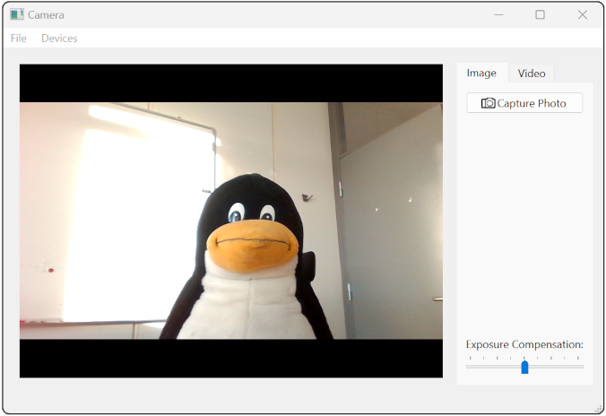

Camera Example
Shows how to capture a still image or record video.

The Camera Example demonstrates how you can use Qt Multimedia to implement some basic Camera functionality to take still images and record video clips with audio.
Running the Example
To run the example from Qt Creator, open the Welcome mode and select the example from Examples. For more information, visit Building and Running an Example.
The example implements a Camera class that acts as our camera interface. It has a user interface, control functions, setting values and a means of defining the location where the image or video clip is to be saved. It will also store the image and video settings.
The Camera class uses:
- An instance of QCamera, the API class interface to the hardware.
- An instance of QImageCapture to take still images.
- An instance of QMediaRecorder to record video. It also contains the user interface object.
The Camera constructor
The Camera constructor does some basic initialization of the user interface including disabling all buttons by default.
Camera::Camera() : ui(new Ui::Camera) { ui->setupUi(this); // disable all buttons by default updateCameraActive(false); readyForCapture(false); ui->recordButton->setEnabled(false); ui->pauseButton->setEnabled(false); ui->stopButton->setEnabled(false); ui->metaDataButton->setEnabled(false);
It seeks permissions for input device access:
#if QT_CONFIG(permissions) // camera QCameraPermission cameraPermission; switch (qApp->checkPermission(cameraPermission)) { case Qt::PermissionStatus::Undetermined: qApp->requestPermission(cameraPermission, this, &Camera::init); return; case Qt::PermissionStatus::Denied: qWarning("Camera permission is not granted!"); return; case Qt::PermissionStatus::Granted: break; } // microphone QMicrophonePermission microphonePermission; switch (qApp->checkPermission(microphonePermission)) { case Qt::PermissionStatus::Undetermined: qApp->requestPermission(microphonePermission, this, &Camera::init); return; case Qt::PermissionStatus::Denied: qWarning("Microphone permission is not granted!"); return; case Qt::PermissionStatus::Granted: break; } #endif
Inputs are assigned:
m_audioInput.reset(new QAudioInput);
m_captureSession.setAudioInput(m_audioInput.get());
// Camera devices:
videoDevicesGroup = new QActionGroup(this);
videoDevicesGroup->setExclusive(true);
updateCameras();
UI signals are connected to slots that react to the triggering event:
connect(&m_devices, &QMediaDevices::videoInputsChanged, this, &Camera::updateCameras);
connect(videoDevicesGroup, &QActionGroup::triggered, this, &Camera::updateCameraDevice);
connect(ui->captureWidget, &QTabWidget::currentChanged, this, &Camera::updateCaptureMode);
connect(ui->metaDataButton, &QPushButton::clicked, this, &Camera::showMetaDataDialog);
connect(ui->exposureCompensation, &QAbstractSlider::valueChanged, this,
&Camera::setExposureCompensation);
setCamera(QMediaDevices::defaultVideoInput());
However, most of the work is done when the setCamera() function is called, passing in a QCameraDevice.
setCamera()
setCamera() sets up various connections between the user interface and the functionality of the Camera class using signals and slots. It also instantiates and initializes the QCamera, QImageCapture, and QMediaRecorder objects.
void Camera::setCamera(const QCameraDevice &cameraDevice) { m_camera.reset(new QCamera(cameraDevice)); m_captureSession.setCamera(m_camera.data()); connect(m_camera.data(), &QCamera::activeChanged, this, &Camera::updateCameraActive); connect(m_camera.data(), &QCamera::errorOccurred, this, &Camera::displayCameraError); if (!m_mediaRecorder) { m_mediaRecorder.reset(new QMediaRecorder); m_captureSession.setRecorder(m_mediaRecorder.data()); connect(m_mediaRecorder.data(), &QMediaRecorder::recorderStateChanged, this, &Camera::updateRecorderState); connect(m_mediaRecorder.data(), &QMediaRecorder::durationChanged, this, &Camera::updateRecordTime); connect(m_mediaRecorder.data(), &QMediaRecorder::errorChanged, this, &Camera::displayRecorderError); } if (!m_imageCapture) { m_imageCapture.reset(new QImageCapture); m_captureSession.setImageCapture(m_imageCapture.get()); connect(m_imageCapture.get(), &QImageCapture::readyForCaptureChanged, this, &Camera::readyForCapture); connect(m_imageCapture.get(), &QImageCapture::imageCaptured, this, &Camera::processCapturedImage); connect(m_imageCapture.get(), &QImageCapture::imageSaved, this, &Camera::imageSaved); connect(m_imageCapture.get(), &QImageCapture::errorOccurred, this, &Camera::displayCaptureError); }
The still and video recording visual tabs are enabled:
m_captureSession.setVideoOutput(ui->viewfinder);
updateCameraActive(m_camera->isActive());
updateRecorderState(m_mediaRecorder->recorderState());
readyForCapture(m_imageCapture->isReadyForCapture());
updateCaptureMode();
Finally the start() function of the QCamera object is called.
m_camera->start();
Triggering capturing
Now that the camera is ready for user commands it waits for a suitable event. Such an event can be a key press of either the Qt::Key_CameraFocus or Qt::Key_Camera buttons on the application window.
Key_CameraFocus will simply display the preview and lock the camera settings.
} void Camera::keyPressEvent(QKeyEvent *event) { if (event->isAutoRepeat()) return; switch (event->key()) { case Qt::Key_CameraFocus: displayViewfinder(); event->accept(); break;
Key_Camera will either call takeImage() if doing an image capture, or call record() or stop() (if already recording) on the QMediaRecorder instance when recording video.
case Qt::Key_Camera:
if (m_doImageCapture) {
takeImage();
} else {
if (m_mediaRecorder->recorderState() == QMediaRecorder::RecordingState)
stop();
else
record();
}
event->accept();
break;